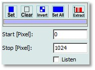

|
掩模操作工具
|
虽然掩模可以直接在图谱查看器中快速操作（参见 图谱查看器掩模操作），但也可以设置或清除由用户精确定义的像素范围。
所有支持掩模操作的数据分析对话框都提供相应的掩模用户控件：

设置（工具按钮）
在左侧起始/停止像素编辑框指定的范围内设置掩模。
清除（工具按钮）：
在左侧起始/停止像素编辑框指定的范围内清除掩模。
反转（工具按钮）：
反转整个掩模。
全部设置（工具按钮）：
设置掩模中的所有像素。
提取（最右侧工具按钮）：
将掩模提取为单一图谱对象至项目中。
您可以将此掩模图谱对象拖放到图谱查看器中的掩模上（参见 图谱查看器拖放），或拖放到某个掩模工具按钮上以重复使用它。
颜色条：
工具按钮下方的颜色条显示预览图谱窗口中正在被上述按钮更改的掩模的颜色。
如果更改了多个掩模，则不会显示颜色条。
起始 [像素] (整数编辑);
将使用设置或清除工具按钮在掩模中清除或设置的范围的起始位置。
停止 [像素] (整数编辑):
将使用设置或清除工具按钮在掩模中清除或设置的范围的结束位置。
监听（复选框）：
如果监听复选框被勾选，起始和停止像素编辑框将监听由任何 图谱查看器 窗口使用 鼠标标记 发送的光谱范围。
另请参阅 监听光标机制